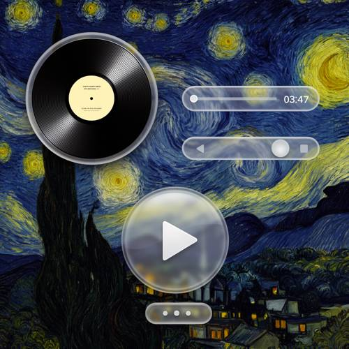
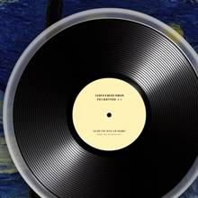
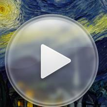
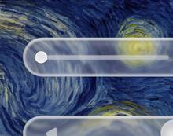

World Knowledge — A music player interface design, the background is a flowing Van Gogh
A music player interface design, the background is a flowing Van Gogh starry sky, the play button is in a glass imitation style, and the album cover is in a retro vinyl record style.


Judge — Direct
- FAILWorld Knowledge — The background of the image depicts a realistic starry sky, likely a photograph or realistic rendering of a galaxy with numerous stars and cosmic dust clouds. This is visually distinct from the iconic, swirling, and painterly style of Van Gogh's 'The Starry Night' painting.
- FAILCompound - Feature Matching — The image shows a central element styled as a retro black vinyl record, which serves as the album cover. On the record's label, there is a play button with a glossy, translucent finish, resembling a glass imitation style. However, the background is a realistic depiction of a galaxy, not the flowing, painterly Van Gogh starry sky requested in the prompt.
Judge — Continuum
- PASSWorld Knowledge — The background of the image is a faithful reproduction of Vincent van Gogh's famous painting, 'The Starry Night'. It clearly depicts the swirling blue and yellow sky, the prominent cypress tree, and the village, which aligns with the 'Van Gogh starry sky' requirement.
- PASSCompound - Feature Matching — The image combines several distinct features as required by the prompt. The background is a representation of Van Gogh's 'The Starry Night,' which has a dynamic, flowing quality. The large, central play button is rendered in a translucent, frosted style with highlights, consistent with a 'glass imitation style.' The element representing the album cover in the upper left is designed to look like a black vinyl record, complete with grooves and a central label, matching the 'retro vinyl record style.'
What the agent did
Thinking
The user is asking me to design a music player interface with specific aesthetic requirements: 1. Background: Flowing Van Gogh starry sky (like Starry Night) 2. Play button: Glass imitation style (glassmorphism/frosted glass effect) 3. Album cover: Retro vinyl record style This is a UI/UX design prompt for a music player app interface. Let me think about how to approach this. The user wants me to create/design a music player interface concept. Let me break down the three elements: 1. **Background - Flowing Van Gogh Starry Sky**: This means the background should have the swirling, turbulent brushstroke patterns from Van Gogh's "The Starry Night" painting - the swirling night sky with stars, the cypress tree, the village below. "Flowing" suggests animation or a dynamic/animated version of the starry sky pattern, with the swirls moving/flowing. 2. **Play button - Glass imitation style (glassmorphism)**: This is the frosted glass / glassmorphism design trend - translucent, blurred background, frosted glass effect like iOS Control Center or the glass morphism design language. The play button should look like it's made of frosted glass with backdrop blur. 3. **Album cover - Retro vinyl record style**: The album art area should look like a vintage/retro vinyl record - circular, with the grooved texture, the center hole, the label area, warm analog aesthetic. Let me think about what the user actually wants. They want me to generate an image of a music player UI with these three specific style choices. Let me create this image. Actually, looking at the context more carefully - the previous conversation shows this is a "benchmark policy" type prompt where the system is supposed to generate an image and then do some workflow around it (inspect, edit, mark best, etc.). The user's actual request at the top is the design brief for the music player. Let me just generate the image as requested. The user wants a music player interface with: - Background: animated/flowing Van Gogh Starry Night style - Play button: glassmorphism (frosted glass) - Album cover area: retro vinyl record aesthetic Let me craft a good prompt for this.
Step 1 — `generate_image`
{
"prompt": "A sleek modern music player app interface design, full screen. The background is a flowing animated interpretation of Van Gogh's \"The Starry Night\" painting: swirling turbulent brushstrokes in deep navy blue and vivid yellow, the iconic cypress tree silhouette on the left, rolling night sky with glowing stars, the small village of Saint-R\u00e9my below with warm window lights, all strokes gently flowing and shifting as if alive. In the center-bottom area is a large circular play/pause button rendered in glassmorphism style: frosted translucent glass with backdrop blur, subtle inner shadow, a crisp white triangular play icon etched into the glass surface, the glass refracting the starry sky background behind it with visible distortion. To the upper-left of the play button is the album cover thumbnail area styled as a retro vinyl record: a perfect black 12-inch disc with fine concentric groove texture catching light, a warm cream center label with minimalist typography, the disc slightly angled so light rakes across the grooves creating a subtle iridescent sheen, sitting in a circular recessed frame. Thin translucent UI elements: a progress bar with a glass track, time display in a light frosted capsule, volume slider with glass thumb. Clean, premium, dark mode, high fidelity product render, 4K detail.",
"width": 1024,
"height": 1024,
"model": "flux2-dev"
}Result img_0
Thinking
Let me check the generated image against the requirements: 1. **Background - Flowing Van Gogh starry sky**: ✅ It's clearly Starry Night with swirling brushstrokes, the cypress tree on the left, a village at the bottom, and a starry sky with yellow stars. Looks good. 2. **Play button - Glass imitation style**: ✅ The large circular play button is rendered in a frosted-glass/glassmorphism style, translucent and refracting the background, with a white play triangle. Good. 3. **Album cover - Retro vinyl record style**: ✅ There's a vinyl record in the upper left with a grooved texture and a cream-colored center label. Good. Additional UI elements: time display 03:47, a progress bar, transport controls (previous/next), a small capsule with three dots at the bottom. All frosted-glass style. Issues I noticed: - The vinyl record is placed in the upper left, somewhat floating. It works as an "album cover," but the composition feels a bit unbalanced. Acceptable as an interface. - The text on the vinyl label is gibberish (typical). This is small text and can be considered acceptable for this kind of design mockup, but let me zoom in and check. - The transport control bar has previous/skip icons, which is fine. - Overall composition: the vinyl overlaps the cypress tree region. Not a problem. Let me zoom in on a few regions to inspect the details: the vinyl label text, the play button, and the overall UI. First I'll mark this as the best candidate (a submittable image), then inspect the regions. Actually, the instructions say to mark as soon as I have an image I'm willing to submit. This is a pretty good image. Let me mark it as the best, then inspect the details. Let me zoom in on the vinyl label and the play button to check for artifacts.
Step 2 — `mark_best`
{
"image": "img_0",
"reason": "All three requested elements present: Van Gogh starry sky background, glassmorphism play button, retro vinyl record album cover, plus coherent glass UI controls."
}Step 3 — `inspect_region`
{
"image": "img_0",
"roi": [
70,
80,
430,
440
]
}Result img_1

Thinking
The vinyl record looks good — the grooves are clean, there's a center hole, and a cream-colored label. The text on the label is gibberish ("IYAR ENE DREK / FOIVSITYOO") — it's a typical AI text artifact. It's small, and it could be considered part of the retro aesthetic, but the prompt didn't request any specific text, so it's a minor flaw. Let me also check the play button region.
Step 4 — `inspect_region`
{
"image": "img_0",
"roi": [
340,
500,
700,
860
]
}Result img_2

Thinking
The play button looks great — a frosted glass circle with backdrop blur, refracting the starry sky, with a crisp white play triangle. The glassmorphism is clearly achieved. Let me quickly check the UI strip (time display, controls) at the top to make sure there are no bad artifacts.
Step 5 — `inspect_region`
{
"image": "img_0",
"roi": [
490,
180,
820,
440
]
}Result img_3

Thinking
The progress bar looks fine — it's a frosted glass capsule with a white circular knob, and the 03:47 time capsule is in a similar style (it was legible in the overall view). Everything matches the brief. The image is good. All three required elements are present and well-executed: 1. Van Gogh's "Starry Night" flowing background ✓ 2. Glassmorphism play button ✓ (the close-up is truly beautiful) 3. Retro vinyl record album cover ✓ (the only flaw is the garbled label text, but as a mockup it's within acceptable range) I'll stop here and report back to the user. I'll keep img_0 as the best.
Model
The image is complete and all three requested elements verify cleanly under close inspection: 1. **Background — flowing Starry Night**: the swirling impasto brushwork, the tall cypress silhouette at left, the glowing yellow stars, and the warm-lit village of Saint-Rémy along the bottom all render faithfully, with the strokes reading as gently in motion. 2. **Play button — glassmorphism**: the close-up confirms a true frosted-glass disc — the night sky visibly refracts and blurs through the surface, with a crisp white play triangle etched on top and a soft inner rim light. Textbook glass imitation. 3. **Album cover — retro vinyl**: the disc sits in the upper left with fine concentric groove texture catching raking light, a subtle iridescent sheen, and a warm cream center label in a circular recessed frame. The supporting UI (time capsule **03:47**, glass progress track, transport bar, and the three-dot capsule) all follow the same frosted-glass language, so the whole screen hangs together as one coherent dark-mode product render. One minor note: the tiny label text on the vinyl reads as abstract lettering rather than legible type — typical for this kind of mockup and not worth regenerating, since everything you specified is present and well executed. I've marked **img_0** as the best result.